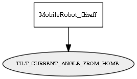

Global overview
All modules
All variables
All commands
Mission files
Pipelines
Variable: TILT_CURRENT_ANGLE_FROM_HOME:
Variable info:
Variable name
Short description
Who publishes it?
Who subscribes to it?
TILT_CURRENT_ANGLE_FROM_HOME:
The current tilt angle (degress) of the robot's screen
MobileRobot_Giraff
Variable graph:

Detailed description:
The current tilt angle (degress) of the robot's screen
Page generated by
Mooxygen 1.1.0
at Thu Jan 22 11:30:21 2015